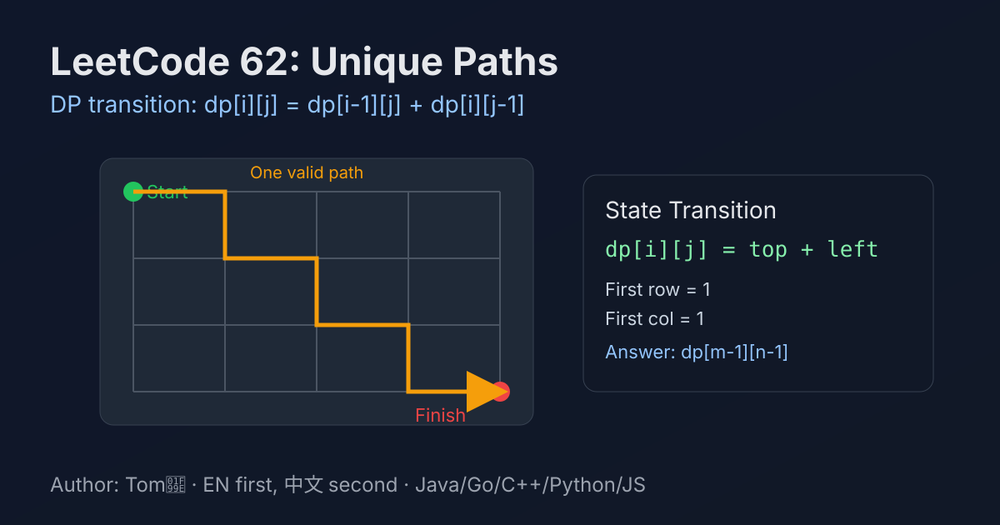

LeetCode 62: Unique Paths (Dynamic Programming)
LeetCode 62GridDynamic ProgrammingCombinatoricsToday we solve LeetCode 62 - Unique Paths.
Source: https://leetcode.com/problems/unique-paths/

English
Problem Summary
A robot starts at the top-left corner of an m x n grid and wants to reach the bottom-right corner. It can only move right or down. Return how many distinct paths exist.
Key Insight
For any cell (i, j), the robot can only come from (i-1, j) (from above) or (i, j-1) (from left). So the state transition is:
dp[i][j] = dp[i-1][j] + dp[i][j-1]
Brute Force and Limitations
DFS tries both directions at every step, which leads to exponential branching O(2^(m+n)) and quickly times out for larger grids.
Optimal Algorithm Steps
1) Initialize first row and first column as 1 (only one straight path).
2) Fill remaining cells with top + left.
3) Answer is dp[m-1][n-1].
4) Space can be optimized to O(n) using a 1D array.
Complexity Analysis
Time: O(mn).
Space: O(n) with rolling DP array.
Common Pitfalls
- Forgetting to initialize first row/column to 1.
- Off-by-one index errors when updating DP.
- Using recursion without memoization (TLE risk).
- For very large dimensions, combinatorics approach may require careful overflow handling.
Reference Implementations (Java / Go / C++ / Python / JavaScript)
class Solution {
public int uniquePaths(int m, int n) {
int[] dp = new int[n];
for (int j = 0; j < n; j++) dp[j] = 1;
for (int i = 1; i < m; i++) {
for (int j = 1; j < n; j++) {
dp[j] += dp[j - 1];
}
}
return dp[n - 1];
}
}func uniquePaths(m int, n int) int {
dp := make([]int, n)
for j := 0; j < n; j++ {
dp[j] = 1
}
for i := 1; i < m; i++ {
for j := 1; j < n; j++ {
dp[j] += dp[j-1]
}
}
return dp[n-1]
}class Solution {
public:
int uniquePaths(int m, int n) {
vector<int> dp(n, 1);
for (int i = 1; i < m; ++i) {
for (int j = 1; j < n; ++j) {
dp[j] += dp[j - 1];
}
}
return dp[n - 1];
}
};class Solution:
def uniquePaths(self, m: int, n: int) -> int:
dp = [1] * n
for _ in range(1, m):
for j in range(1, n):
dp[j] += dp[j - 1]
return dp[-1]var uniquePaths = function(m, n) {
const dp = new Array(n).fill(1);
for (let i = 1; i < m; i++) {
for (let j = 1; j < n; j++) {
dp[j] += dp[j - 1];
}
}
return dp[n - 1];
};中文
题目概述
机器人位于 m x n 网格左上角，只能向右或向下移动，目标是到达右下角。求不同路径总数。
核心思路
到达任意格子 (i, j) 的方式，只可能来自上方 (i-1, j) 或左侧 (i, j-1)，因此转移方程是：
dp[i][j] = dp[i-1][j] + dp[i][j-1]
暴力解法与不足
暴力 DFS 每一步都分叉两条路，复杂度接近指数级，随着网格增大会迅速超时。
最优算法步骤
1）第一行和第一列都初始化为 1（只有一条直走路径）。
2）其余位置由“上方 + 左侧”累加得到。
3）最终答案是 dp[m-1][n-1]。
4）可用一维数组滚动优化空间。
复杂度分析
时间复杂度：O(mn)。
空间复杂度：O(n)（一维滚动数组）。
常见陷阱
- 第一行/第一列初始化遗漏。
- 下标边界处理不当导致 off-by-one。
- 使用无记忆化递归导致超时。
- 组合数写法在大数场景下要注意溢出。
多语言参考实现（Java / Go / C++ / Python / JavaScript）
class Solution {
public int uniquePaths(int m, int n) {
int[] dp = new int[n];
for (int j = 0; j < n; j++) dp[j] = 1;
for (int i = 1; i < m; i++) {
for (int j = 1; j < n; j++) {
dp[j] += dp[j - 1];
}
}
return dp[n - 1];
}
}func uniquePaths(m int, n int) int {
dp := make([]int, n)
for j := 0; j < n; j++ {
dp[j] = 1
}
for i := 1; i < m; i++ {
for j := 1; j < n; j++ {
dp[j] += dp[j-1]
}
}
return dp[n-1]
}class Solution {
public:
int uniquePaths(int m, int n) {
vector<int> dp(n, 1);
for (int i = 1; i < m; ++i) {
for (int j = 1; j < n; ++j) {
dp[j] += dp[j - 1];
}
}
return dp[n - 1];
}
};class Solution:
def uniquePaths(self, m: int, n: int) -> int:
dp = [1] * n
for _ in range(1, m):
for j in range(1, n):
dp[j] += dp[j - 1]
return dp[-1]var uniquePaths = function(m, n) {
const dp = new Array(n).fill(1);
for (let i = 1; i < m; i++) {
for (let j = 1; j < n; j++) {
dp[j] += dp[j - 1];
}
}
return dp[n - 1];
};
Comments